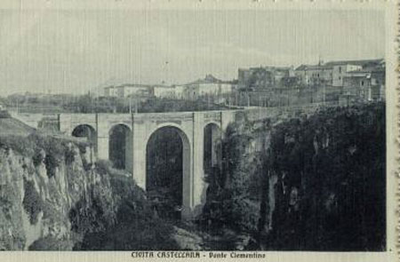
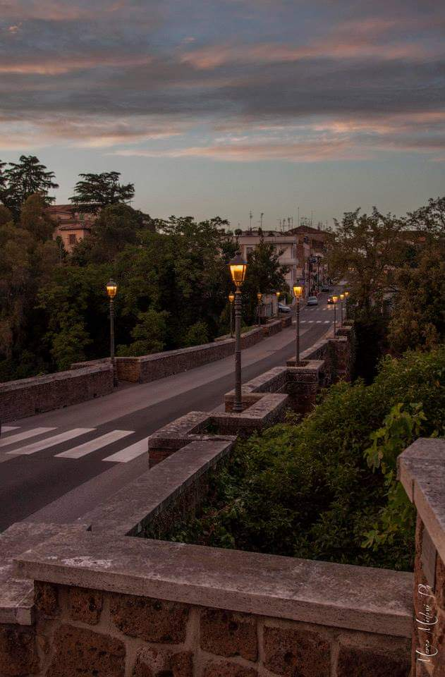
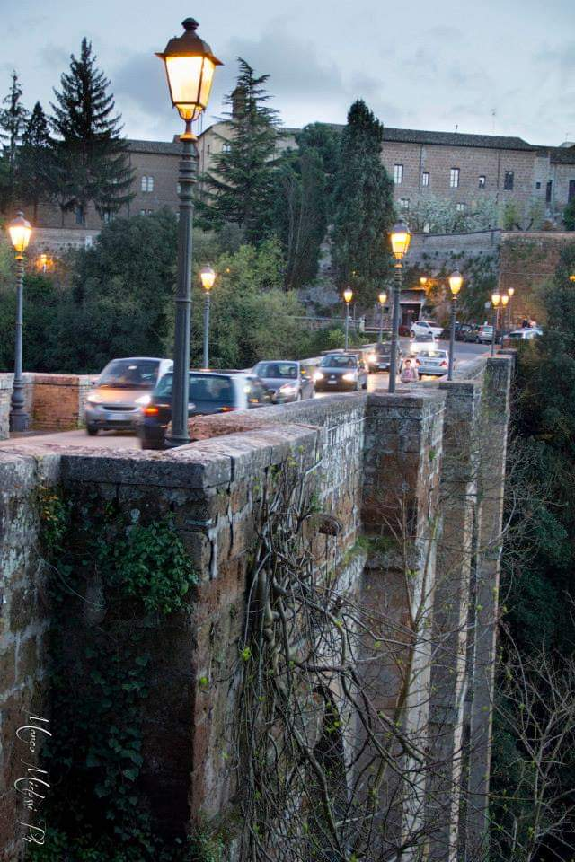

Il Ponte Clementino a Civita Castellana fu costruito nel lontano 1709 per volontà di papa Clemente XI, da cui poi ne è derivato il nome su progetto dell’architetto romano Filippo Bariggioni.
Questa costruzione fu per l’epoca, e non solo, di grandissima importanza, in quanto consentiva ai cittadini un rapido spostamento con i territori a nord della cittadina. Prima di allora il territorio era “squarciato” in due parti dalla forra del Rio Maggiore ed attraversare questa per il suo fondovalle richiedeva molto tempo ed energie.


Intorno al 1800, quando il fenomeno del Grand Tour era al suo massimo splendore, i numerosissimi viaggiatori, pittori, ed artisti che nel recarsi a Roma attraversavano l’antica cittadina falisca rimanevano meravigliati nell’osservare questa imponente opera di ingegneria stradale che ai tempi misurava 54 metri di altezza (un vero e proprio record per gli standard di allora) e che offre ancora oggi una vista a 360° sulla rigogliosa e profondissima forra del rio Maggiore, divenendo una vera e propria musa ispiratrice per i pittori di quel tempo. Originariamente il ponte presentava ,oltre ad una torre posta all’estremità nord, due ordini di arcate, otto sopra e quattro sotto. Questa predisposizione però il 29 ottobre del 1861, alle ore 17:00, si dimostrò non funzionale, in quanto una piena
del sottostante torrente accumulò numerosissimi detriti nelle arcate inferiori della costruzione, provocandone così il cedimento. Venne così ricostruito ridimensionando l’intera struttura, questa volta con un solo ordine di tre arcate alte circa 30 metri in modo di consentire il normale deflusso di eventuali piene del Rio Maggiore. Durante la ricostruzione venne anche eretta una splendida porta sormontata da uno splendido stemma in travertino di Pio IX, demolita poi nel 1911 per consentire il passaggio della tramvia. Il ponte attualmente è alto 40 metri e lungo 90 e rappresenta ancora oggi un’opera veramente imponente che si concilia perfettamente con la sempreverde forra del Rio Maggiore, proprio nel cuore della città.
